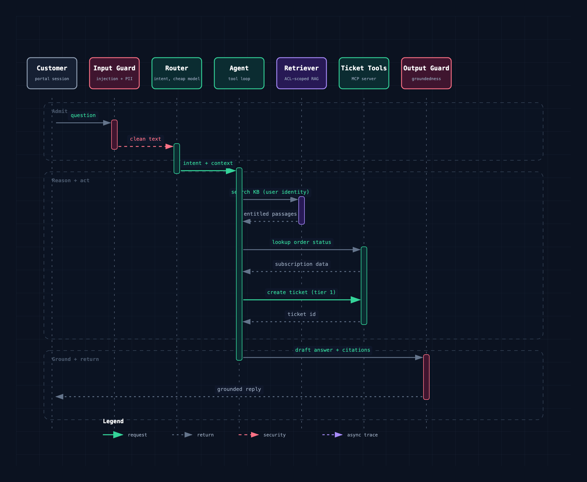
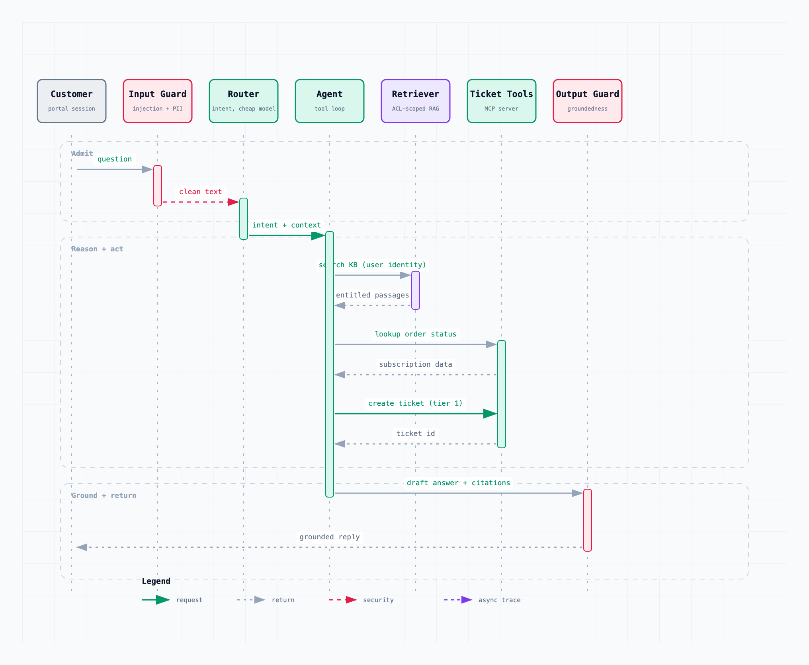
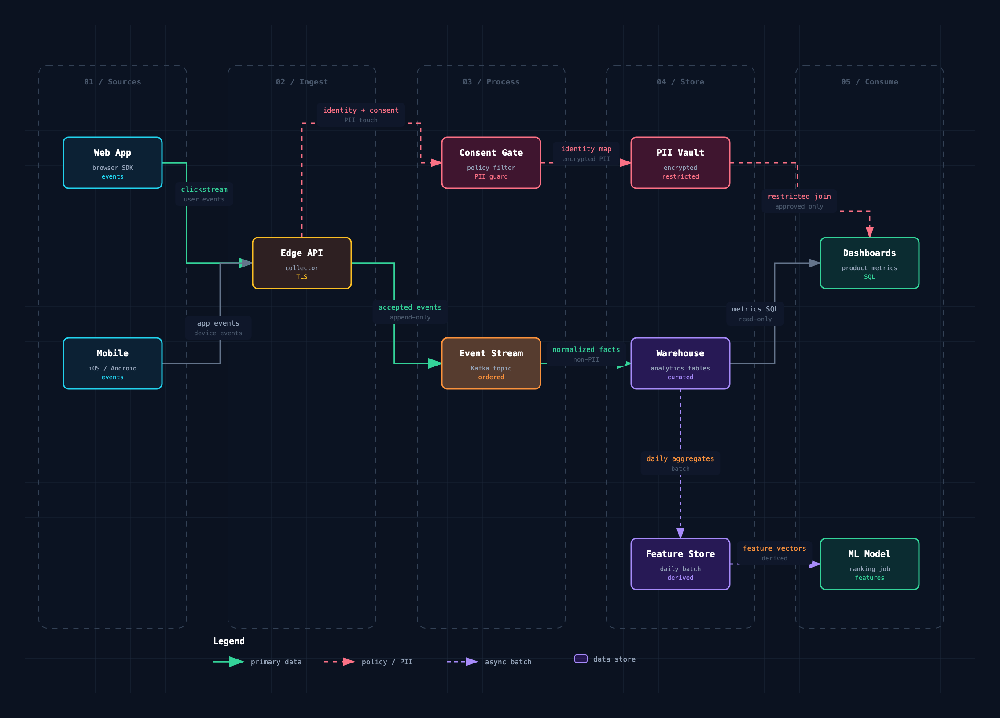
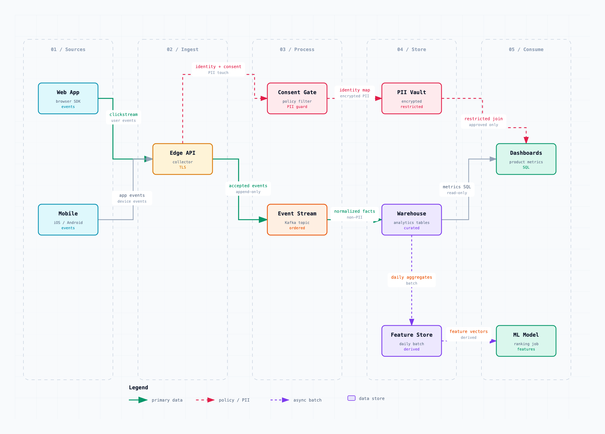
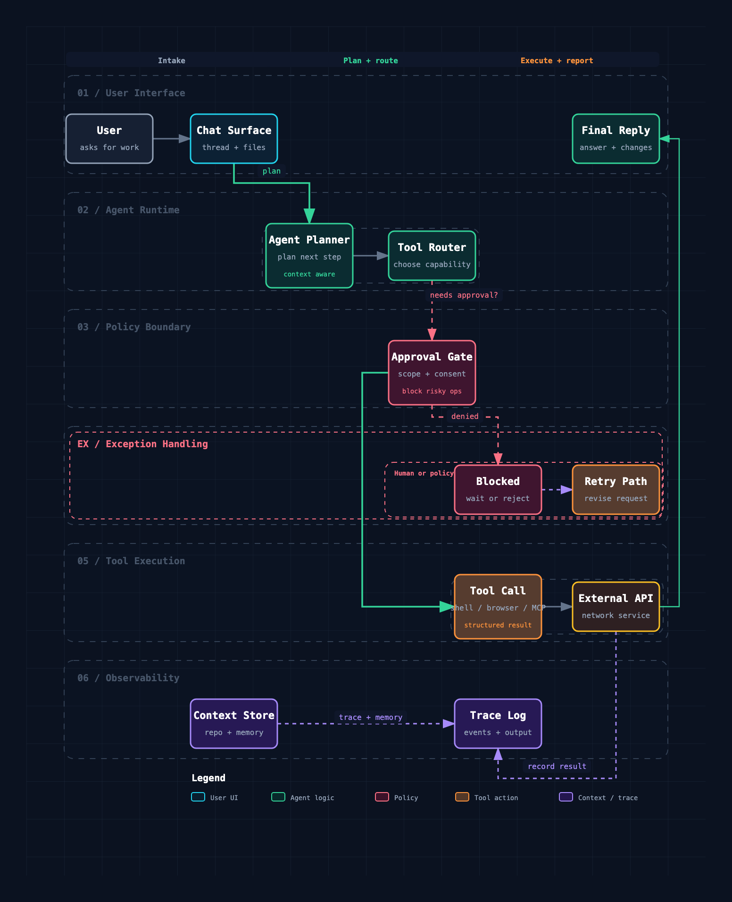
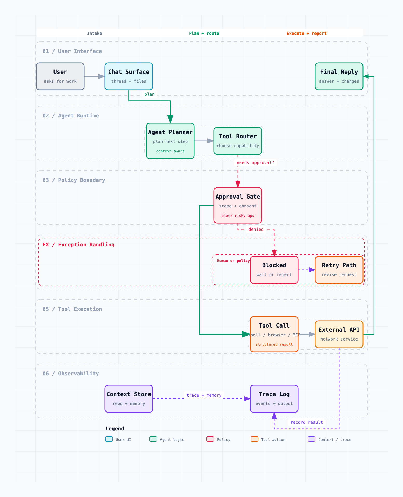
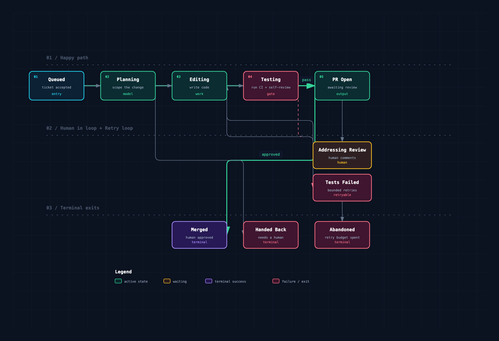
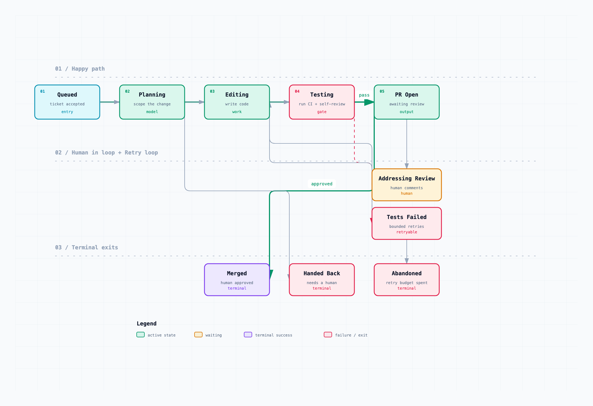

Five diagram types, one vocabulary
Every design embeds diagrams drawn by the bundled engine, with a component vocabulary built for agentic systems.


Architecture
Components, trust boundaries, and how requests flow between them.


Sequence
The primary request path, including guardrail and retrieval hops.


Data flow
Ingestion and retrieval pipelines, PII boundaries, and freshness.


Workflow
The orchestration pattern: routing, chaining, and lanes.


Lifecycle
State machines: an agent run, a ticket, an order, with retries and exits.
Agent-native components: agent, router, retriever, vector store, guardrail, eval loop, human review, tool, memory, queue, ASR, TTS.